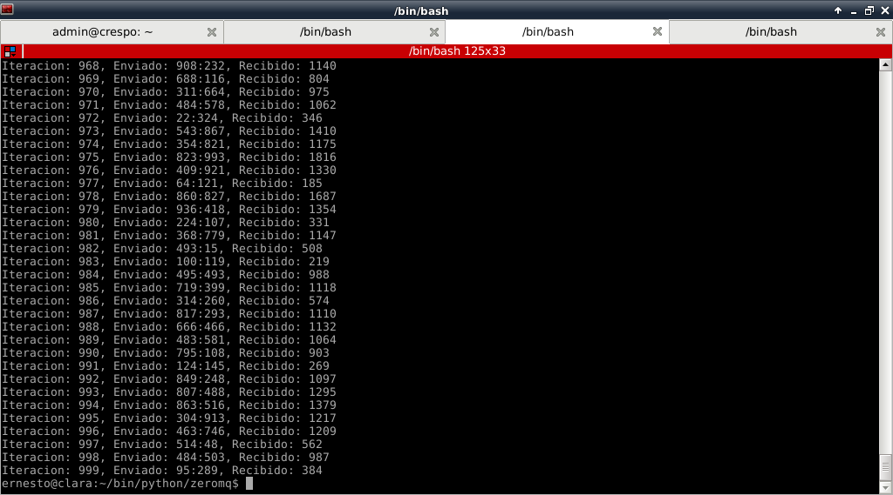

Tutorial de ZeroMQ con python . Parte 1.
Posted on sáb 26 mayo 2012 in Tutorial Python • 2 min read
ZeroMQ es una librería de mensajes, permite crear complejos sistemas de comunicación con poco esfuerzo (sistemas de cola).
ZeroMQ es más rápido que otros sistemas de mensajes basados en el protocolo AMQP.
En este artículo se explicará un uso sencillo de zeroMQ al estilo cliente y servidor. Se usará el puerto 5000 para la comunicación entre el cliente y servidor. En el cliente se genera de forma aleatoria 2 números que se le pasan al servidor que sacará una cuenta y devuelve el resultado al cliente quien muestra el resultado en pantalla. La generación de números se realiza 1000 veces, luego le pasa al servidor la letra q la cual es la señal para terminar el servidor.
Para instalar zeroMQ para python se tiene que instalar python-zmq y/o python3-zmq para python3:
#apt-get install python3-zmq python-zmq
Servidor: El código del servidor es el siguiente:
#!/usr/bin/env python
#Se importa zeromq
import zmq
#Se crea la instancia del contexto de zmq.
context = zmq.Context()
#Se define el socket con parámetro respuesta REP.
socket = context.socket(zmq.REP)
#Se asocia la dirección IP y el puerto donde el servidor escucha las peticiones.
socket.bind("tcp://127.0.0.1:5000")
#Se define un contados
c = 1
#Se genera un ciclo que sólo finaliza si se recibe la letra q.
while True:
#Se recibe los mensajes.
msg = socket.recv()
#Se consulta si la longitud del mensaje es 1 y es la letra q se termina el ciclo
if len(msg) == 1 and msg == "q":
break
#Se separa los datos que viene en un string separados por :
datos = msg.split(":")
#se realiza una suma con los datos recibidos.
resultado = int(datos[0]) + int(datos[1])
#Se muestra en pantalla el resultado
print "Iteracion: %s ,He recibido: %s, el resultado es: %s " %(c,msg,resultado)
#Se envía el resultado al cliente
socket.send(str(resultado))
#Se incrementa el contador.
c += 1
El código del cliente es el siguiente:
#!/usr/bin/env python
#Se importa zeromq y random
import zmq
import random
#Se crea la instancia del contexto
context = zmq.Context()
#Se crea el socket y se para el argumento de petición REQ
socket = context.socket(zmq.REQ)
#Se coencta a la IP y puerto donde escucha el servidor
socket.connect("tcp://127.0.0.1:5000")
#Se genera un ciclo de 1000 repeticiones
for i in range(1000):
#Se crea el string con el mensaje, se pasa 2 aargumentos aleatorios
msg = "%s:%s" %(random.randint(1, 1000),random.randint(1, 1000))
#Se envia el mensaje al servidor
socket.send(msg)
#Se recibe el mensaje del servidor
msg_in = socket.recv()
#Se muestra en patalla los datos y el resultado
print "Iteracion: %s, Enviado: %s, Recibido: %s" %(i,msg,msg_in)
#Si se llea a la iteración 999 se envía la letra q para finalizar
if i == 999: socket.send("q")
El resultado del lado del cliente y del servidor es el siguiente:
La figura muestra la ejecución del script servidor:

La figura muestra la ejecución del script cliente:

¡Haz tu donativo! Si te gustó el artículo puedes realizar un donativo con Bitcoin (BTC) usando la billetera digital de tu preferencia a la siguiente dirección: 17MtNybhdkA9GV3UNS6BTwPcuhjXoPrSzV
O Escaneando el código QR desde la billetera: